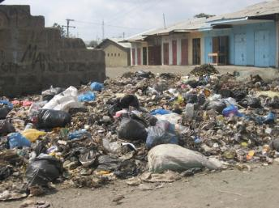

MAENEO YASABABISHAYO
KIPINDUPINDU:
KIPINDUPINDU:
| 1.Nyumbani | 2.Utangulizi |
| 3.Maambukizi | 4.Kinga |
| 5.Hasara | 6.Tahadhari |
| 7.Dalili | 8.Huduma |
| 9.Maeneo Hatarishi | |
Mazingira yasiyotunzwa vizuri na jamii yanaweza kuchochea magonjwa ya miripuko kama vile kipundupindu
Yafuatayo ni baadhi ya maeneo ambayo yanaweza kusababisha ugonjwa wa kipindupindu:
1.Katika vyanzo vya maji
Kipindupindu hutokea hasa katika nchi pasipo maji safi hasa ambako maji yakunywa na maji ya choo yanaweza kuchanganyika bacteria ya Vibrio cholera hupatikana hasa katika kinyesi na maji ya choo na pia katika maji ya bahari, maziwa na mito kama maji machafu huingizwa katika madimbwi ya maji bila kusafishwa kwanza
2.Katika maeneo yanayotupwa taka
Ikiwa maeneo ya kumwagia taka hayatahifadhiwa vizuri inaweza kupelekea kueneo kwa maradhi ya kipindupindu .maradhi ya kipindupindu husababishwa na asilimia kubwa ya uchafu unaotupwa katika maeneo ya kutupia taka ambayo hayaja hifadhiwa au maeneo yasiyo husika (kiholela).wadudu kama Nzi hubeba vimelea vya kipindupindu na kusambaza majumbani

3.Biashara za vyakula na vinywaji visivyo hifadhiwa
Baadhi ya wafanya biashara wa vyakula hawana tahadhari wakati wa kuviandaa au wakati wa mauzo wa vyakula hivyo na kupelekea Nzi au wadudu waliobeba vimelea vya kipindupindu kutua juu ya vyakula hivyo na kumsababishia mlaji wa chakula hicho kupata maradhi ya kipindupindu.
Kwa upande wa vinywaji vinatayarishwa bila kuchemsha maji yake au maji safi na kusababisha vimelea kubaki na kumsababishia mnywaji kupata maradhi

4.Maji yanayotuama
Hii inasababishwa na kuziba kwa mitaro ya maji taka au kutokua na sehemu maalumu za kuhifadhia maji hayo na kupelekea uchafu ambao unaweza kubebwa na wadudu au hata watoto wanaocheza karibu na maeneo hayo na kusababisha maambukizi.